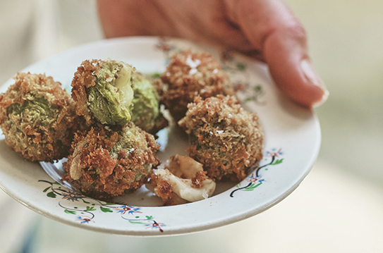

Stuffed Fried Olives Recipe from the Andalusia Region of Spain

Cheese-Stuffed Fried Olives
Olives trees are inextricably linked to Mediterranean culture,
with olive oil being one of the main ingredients in our cuisine.
In fact, although there are 300 million olive trees in Spain,
only 5% of those are eaten; the rest are used for making olive oil.
When you think of all the olives eaten, it makes sense - yes, they are very common,
but they should be given more credit as a high-quality product.
Gordales are one of my favourite varieties; gorda means 'fat' and, indeed,
these olives are plump and almost meaty.
Serves 4 as a tapas
- 12-16 gordal olives, pitted
- 70 g(21/2oz) semi-cured manchego, grated
- 2 tablespoons plain (all-purpose) flour
- 2 free-range eggs, lightly beaten
- 100 g(31/2oz | 3/4 cup) panko or dried breadcrumbs
- olive oil, for frying
- sea salt
To serve
cold sherry, preferably fino or manzanilla
Stuff the olives with as much manchego as you can fit
inside them. Place the flour, egg, and breadcrumbs in three separate shallow bowls.
Roll the olives in the flour, then in the beaten egg, and finally in the breadcrumbs.
Heat 2 cm(3/4in) of oil in a deep saucepan to 180oC (350oF)
- or until a cube of bread browns in about 20 seconds.
Lower the olives into the oil and fry for a few minutes until golden brown.
Drain on some paper towel, season to taste with sea salt and serve with a cold glass of sherry.
Back